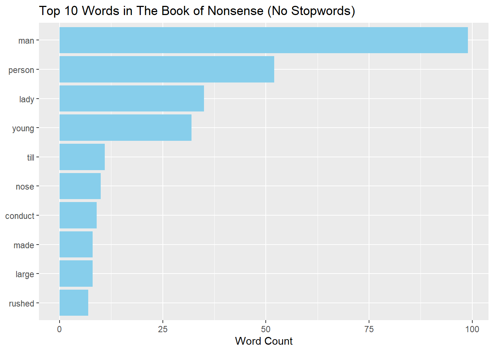
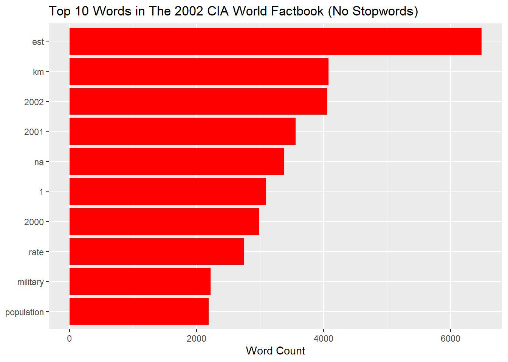
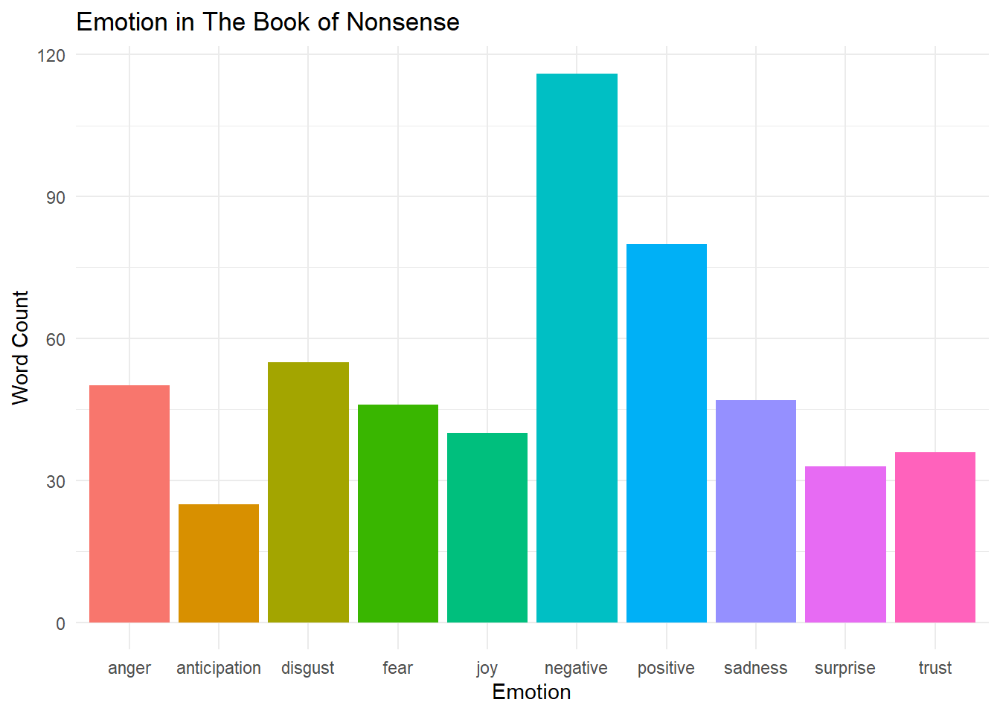
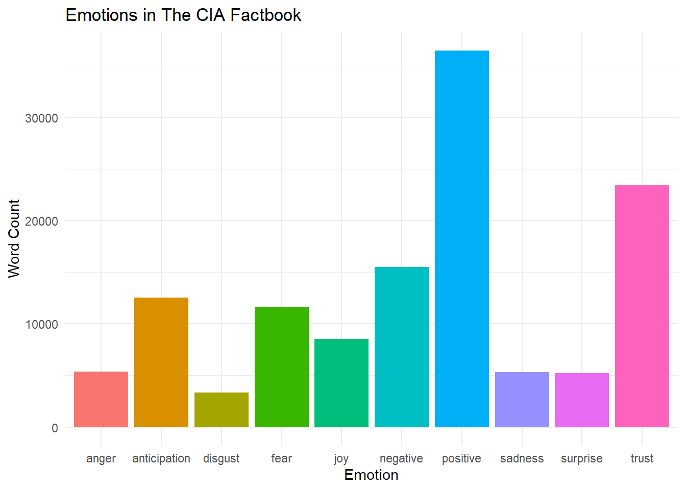
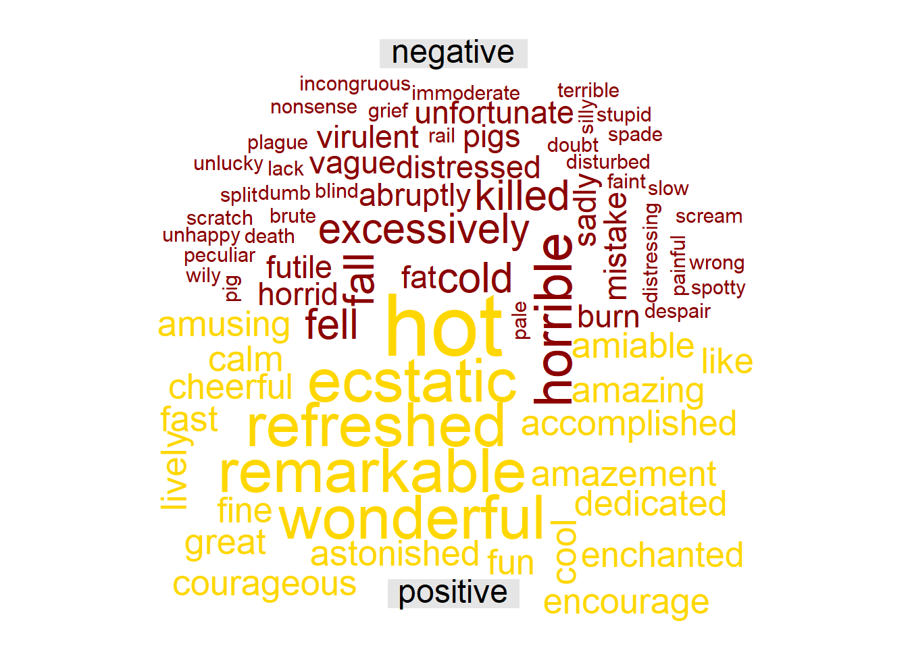
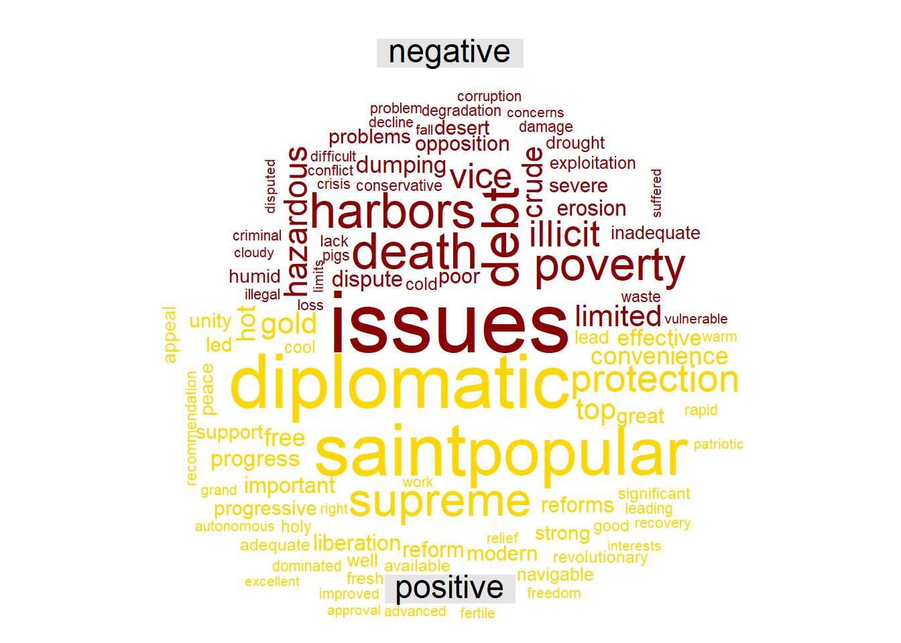

For this project, I explored two very different texts:
The Book of Nonsense by Edward Lear, a collection of whimsical limericks filled with absurd characters and places (which was published in 1846!).
The 2002 CIA World Factbook, a straightforward encyclopedia of global country data, such as geography, economy, and demographics. I chose 2002 because I thought it would be especially interesting to see what the CIA had to say after 9/11.
By combining nonsense with writing from the CIA, I wanted to look at the language differences between the two different text.
Getting the environment ready for the project:
Importing the data and doing some basic cleaning:
#6344 = CIA 2002#982 = The Book of NonsenseBooks <-gutenberg_download(c(6344, 982), meta_fields ="title", mirror ="http://mirror.csclub.uwaterloo.ca/gutenberg/")write_csv(Books, "~/SDS264_F24/books.csv") #writes csv so we can use itBooks <-read_csv("~/SDS264_F24/books.csv", show_col_types =FALSE) #reads csvBooks |>count(title)
# A tibble: 2 × 2
title n
<chr> <int>
1 The 2002 CIA World Factbook 99508
2 The Book of Nonsense 1260
Books
# A tibble: 100,768 × 3
gutenberg_id text title
<dbl> <chr> <chr>
1 982 BOOK OF NONSENSE The Book of Nonsense
2 982 <NA> The Book of Nonsense
3 982 By Edward Lear The Book of Nonsense
4 982 <NA> The Book of Nonsense
5 982 <NA> The Book of Nonsense
6 982 <NA> The Book of Nonsense
7 982 There was an Old Derry down Derry, The Book of Nonsense
8 982 Who loved to see little folks merry; The Book of Nonsense
9 982 So he made them a Book, The Book of Nonsense
10 982 And with laughter they shook, The Book of Nonsense
# ℹ 100,758 more rows
nonsense <- Books |>filter(str_detect(title, "The Book of Nonsense")) #detects if the title matches.CIA <- Books |>filter(str_detect(title, "The 2002 CIA World Factbook"))Books |>count(title)
# A tibble: 2 × 2
title n
<chr> <int>
1 The 2002 CIA World Factbook 99508
2 The Book of Nonsense 1260
Books
# A tibble: 100,768 × 3
gutenberg_id text title
<dbl> <chr> <chr>
1 982 BOOK OF NONSENSE The Book of Nonsense
2 982 <NA> The Book of Nonsense
3 982 By Edward Lear The Book of Nonsense
4 982 <NA> The Book of Nonsense
5 982 <NA> The Book of Nonsense
6 982 <NA> The Book of Nonsense
7 982 There was an Old Derry down Derry, The Book of Nonsense
8 982 Who loved to see little folks merry; The Book of Nonsense
9 982 So he made them a Book, The Book of Nonsense
10 982 And with laughter they shook, The Book of Nonsense
# ℹ 100,758 more rows
nonsense <- Books |>filter(str_detect(title, "The Book of Nonsense")) #creates a seperate data set just for Nonsense and CIA booksCIA <- Books |>filter(str_detect(title, "The 2002 CIA World Factbook"))
Covers the use of 1 str function, and cleaning of the data.
Cleaning the data using str functions
library(stringr)nonsense_clean <- nonsense |>mutate(text =str_remove_all(text, "[[:punct:]]")) |>#Remove all punctuation from the text columnmutate(text =str_to_lower(text)) |>#Convert all text to lowercase to avoid treating words like "Man" and "man" as different words mutate(text =str_squish(text)) #Remove extra spaces, helps when we are tokenizing CIA_clean <- CIA |>mutate(text =str_remove_all(text, "[[:punct:]]")) |>mutate(text =str_to_lower(text)) |>mutate(text =str_squish(text))
This covers three str functions: str_remove_all(), str_to_lower(), str_squish().
** Tokenizing the Data:**
tidy_nonsense <- nonsense_clean |>mutate(line =row_number()) |>unnest_tokens(word, text, token ="words")# Tokenize CIA Factbooktidy_CIA <- CIA_clean |>mutate(line =row_number()) |>unnest_tokens(word, text, token ="words") #tokenizessmart_stopwords <-get_stopwords(source ="smart")#wanted to find numbers just in case I decided to do any number analysis of the textCIA_numbers <- tidy_CIA |>filter(str_detect(word, "[0-9]+")) |>count(word, sort =TRUE)#also wanted to find long words in the nonsense booknonsense_longwords <- tidy_nonsense |>filter(str_detect(word, "\\b[a-z]{5,}\\b")) |>count(word, sort =TRUE)# Clean Nonsense wordstidy_nonsense_nostop <- tidy_nonsense |>anti_join(smart_stopwords, by ="word") |>#need to remove stopwordsfilter(!is.na(word)) #when words are removed there were some lines that were empty, we need to remove NAs# Clean CIA wordstidy_CIA_nostop <- tidy_CIA |>anti_join(smart_stopwords, by ="word")|>filter(!is.na(word)) #same as above
To prepare my texts for the rest of the project, I used tokenizing to split the text into individual words, which makes it easier to count words and match them to sentiments. I also removed stop words and NAs to clean up the data. I used regular expressions to find numbers in the CIA Factbook and long words in The Book of Nonsense. This step helped me get the text ready for further analysis like word counts, word clouds, and sentiment graphs.
Plotting the Top 10 words in each text:
library(ggplot2)library(forcats)# Top words in Nonsensetidy_nonsense_nostop |>count(word, sort =TRUE) |>slice_max(n, n =10) |>ggplot(aes(fct_reorder(word, n), n)) +geom_col(fill ="skyblue") +coord_flip() +labs(title ="Top 10 Words in The Book of Nonsense (No Stopwords)",x =NULL, y ="Word Count")

# Top words in CIAtidy_CIA_nostop |>count(word, sort =TRUE) |>slice_max(n, n =10) |>ggplot(aes(fct_reorder(word, n), n)) +geom_col(fill ="red") +coord_flip() +labs(title ="Top 10 Words in The 2002 CIA World Factbook (No Stopwords)",x =NULL, y ="Word Count")

When comparing the top 10 words in The Book of Nonsense and The 2002 CIA World Factbook, clear differences emerge in both focus and language. In The Book of Nonsense, the most frequent words are centered around people, such as “man,” “person,” “lady,” and “young,” which shows the book’s focus on human characters. I found it most interesting that “man” is the top word and there is no mention of “woman”; instead, the term “lady” is used. This reflects 1800s’ gender norms where “lady” was the common way to refer to women in a polite or literary context. In contrast, the CIA Factbook shows a heavy emphasis on numbers, places, and statistics, with top words like “est,” “km,” “2002,” “population,” and “rate.” There are almost no references to people or emotions which shows its role as a factual and neutral government report. Overall, The Book of Nonsense is focused on characters and actions, while the CIA Factbook prioritizes data and information about countries and populations. The contrast between the two reflects both the purpose of the texts and the historical context in which they were written.
Are there any emotions in the CIA Factbook?
Next, I will compare the emotions in The Book of Nonsense to the 2002 CIA Factbook… if there are any that is.
nonsense_emotions <- tidy_nonsense |>#joining the nonsense data with nrc for emotions inner_join(nrc, by ="word") |>count(sentiment, sort =TRUE)
Warning in inner_join(tidy_nonsense, nrc, by = "word"): Detected an unexpected many-to-many relationship between `x` and `y`.
ℹ Row 24 of `x` matches multiple rows in `y`.
ℹ Row 8598 of `y` matches multiple rows in `x`.
ℹ If a many-to-many relationship is expected, set `relationship =
"many-to-many"` to silence this warning.
nonsense_emotions |>#plots the emotionsggplot(aes(x = sentiment, y = n, fill = sentiment)) +geom_col(show.legend =FALSE) +labs(title ="Emotion in The Book of Nonsense", y ="Word Count", x ="Emotion") +theme_minimal() #plots the sentiment

CIA_emotions <- tidy_CIA |>#joining the CIA data with nrc for emotions inner_join(nrc, by ="word") |>count(sentiment, sort =TRUE)
Warning in inner_join(tidy_CIA, nrc, by = "word"): Detected an unexpected many-to-many relationship between `x` and `y`.
ℹ Row 67 of `x` matches multiple rows in `y`.
ℹ Row 10405 of `y` matches multiple rows in `x`.
ℹ If a many-to-many relationship is expected, set `relationship =
"many-to-many"` to silence this warning.
CIA_emotions |>ggplot(aes(x = sentiment, y = n, fill = sentiment)) +geom_col(show.legend =FALSE) +labs(title ="Emotions in The CIA Factbook", y ="Word Count", x ="Emotion") +theme_minimal()

The sentiment of the CIA Factbook is much more positive than expacted. This is surprising as it aims to be a neutral report, but I thought it was interesting that there were so many instances of emotions in the text regardless. I was expecting the chart to be near 0 on all. The Book of Nonsense has a much more uneven distribution of emotions, skewing towards negative. I found this surprising as the description of nonsense and whimsical poems sound positive. However, R’s sentiment analysis found it to be the oppose. This analysis between the two texts shows how texts with much different goals are going to have a unique distribution of sentiment depending on said goals.
Creating word clouds to compare the texts:
library(reshape2) #needed these packages to create a word cloud
Warning: package 'reshape2' was built under R version 4.4.3
Attaching package: 'reshape2'
The following object is masked from 'package:tidyr':
smiths
library(wordcloud)# Wide format is needed to create word cloudnonsense_sentiment_words <- tidy_nonsense |>inner_join(get_sentiments("bing"), by ="word") |>count(word, sentiment, sort =TRUE)nonsense_wide <- nonsense_sentiment_words |>acast(word ~ sentiment, value.var ="n", fill =0)# Plot comparison cloudcomparison.cloud(nonsense_wide,colors =c("darkred", "gold"),max.words =100,title.size =1.5)
Warning in comparison.cloud(nonsense_wide, colors = c("darkred", "gold"), :
enraptured could not be fit on page. It will not be plotted.
Warning in comparison.cloud(nonsense_wide, colors = c("darkred", "gold"), :
immense could not be fit on page. It will not be plotted.
Warning in comparison.cloud(nonsense_wide, colors = c("darkred", "gold"), :
ingenious could not be fit on page. It will not be plotted.
Warning in comparison.cloud(nonsense_wide, colors = c("darkred", "gold"), :
laudable could not be fit on page. It will not be plotted.
Warning in comparison.cloud(nonsense_wide, colors = c("darkred", "gold"), :
loved could not be fit on page. It will not be plotted.
Warning in comparison.cloud(nonsense_wide, colors = c("darkred", "gold"), :
merry could not be fit on page. It will not be plotted.
Warning in comparison.cloud(nonsense_wide, colors = c("darkred", "gold"), :
nice could not be fit on page. It will not be plotted.
Warning in comparison.cloud(nonsense_wide, colors = c("darkred", "gold"), :
perfectly could not be fit on page. It will not be plotted.
Warning in comparison.cloud(nonsense_wide, colors = c("darkred", "gold"), :
pleasant could not be fit on page. It will not be plotted.
Warning in comparison.cloud(nonsense_wide, colors = c("darkred", "gold"), :
polite could not be fit on page. It will not be plotted.
Warning in comparison.cloud(nonsense_wide, colors = c("darkred", "gold"), :
praise could not be fit on page. It will not be plotted.
Warning in comparison.cloud(nonsense_wide, colors = c("darkred", "gold"), :
propitious could not be fit on page. It will not be plotted.
Warning in comparison.cloud(nonsense_wide, colors = c("darkred", "gold"), :
ready could not be fit on page. It will not be plotted.
Warning in comparison.cloud(nonsense_wide, colors = c("darkred", "gold"), :
remarkably could not be fit on page. It will not be plotted.
Warning in comparison.cloud(nonsense_wide, colors = c("darkred", "gold"), :
sensations could not be fit on page. It will not be plotted.
Warning in comparison.cloud(nonsense_wide, colors = c("darkred", "gold"), :
sharp could not be fit on page. It will not be plotted.
Warning in comparison.cloud(nonsense_wide, colors = c("darkred", "gold"), :
smile could not be fit on page. It will not be plotted.
Warning in comparison.cloud(nonsense_wide, colors = c("darkred", "gold"), :
smiles could not be fit on page. It will not be plotted.
Warning in comparison.cloud(nonsense_wide, colors = c("darkred", "gold"), :
steady could not be fit on page. It will not be plotted.
Warning in comparison.cloud(nonsense_wide, colors = c("darkred", "gold"), :
strong could not be fit on page. It will not be plotted.
Warning in comparison.cloud(nonsense_wide, colors = c("darkred", "gold"), : top
could not be fit on page. It will not be plotted.
Warning in comparison.cloud(nonsense_wide, colors = c("darkred", "gold"), :
warm could not be fit on page. It will not be plotted.
Warning in comparison.cloud(nonsense_wide, colors = c("darkred", "gold"), :
welcome could not be fit on page. It will not be plotted.
Warning in comparison.cloud(nonsense_wide, colors = c("darkred", "gold"), :
well could not be fit on page. It will not be plotted.
Warning in comparison.cloud(nonsense_wide, colors = c("darkred", "gold"), :
works could not be fit on page. It will not be plotted.

# Wide is needed for CIA FactbookCIA_sentiment_words <- tidy_CIA |>inner_join(get_sentiments("bing"), by ="word") |>count(word, sentiment, sort =TRUE)CIA_wide <- CIA_sentiment_words |>acast(word ~ sentiment, value.var ="n", fill =0)# comparison cloudcomparison.cloud(CIA_wide,colors =c("darkred", "gold"),max.words =100,title.size =1.5)

The word clouds show comparison between the positive and negative sentiments in each of the texts. The nonsense book shows that the emotions are much more personal where as the CIA book is very focused on government and societial interactions as a whole. Overall, this project was interesting because we got to see may differences between a text written for pleasure and entertainment during the mid 1800s and a text written by the government 156 years later.